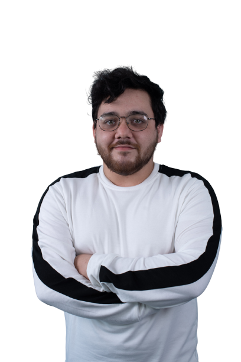

A propos de moi
Étant passionné d'informatique depuis mon plus jeune âge. Je me suis intéressé à la conception de sites web. Autonome en quête de connaissance ; aimant schématisait mes pensées, tous en étant minutieux.
Mes Atouts :
- Esprit d'équipe
- Respectueux
- Serieux
- A l'écoute
Soft Skills :
- Ponctuel
- Impliqué
- Patient
Diplômes et Formations :
-
Formation Développeur intégrateur Web
Simplon.co - Boulogne sur mer - De mars 2023 à avril 2023
-
Préformation Développeur web Arduino
Criac - Outreau - 2021
-
Formation Cléa
Greta Grand Littoral - Boulogne sur mer de 2019 à 2020
-
Bac Professionnel SEN (Systèmes électronique et numérique)
Lycée Edouard Branly - Boulogne sur mer - De Septembre 2014 à juillet 2017
-
BEP SEN
Lycée Edouard Branly - Boulogne sur mer - De Septembre 2015 à juillet 2016
Expériences Professionnelles :
-
Stagiaire électricien
( 2 semaines )Hôpital Duchenne - Saint Martin Boulogne - 2015
-
Stagiaire informatique
( 2 semaines )Cyber Espace - Outreau - 2015
-
Stagiaire photo irréparable
( 2 semaines )la SACEL - Saint léonard - 2015
-
Stagiaire vendeur
( 2 semaines )Lycée Edouard Branly - Boulogne sur mer - De Septembre 2014 à juillet 2017
Mes passions
Developpement web
Les Jeux Videos
Le Football
Les Voyages